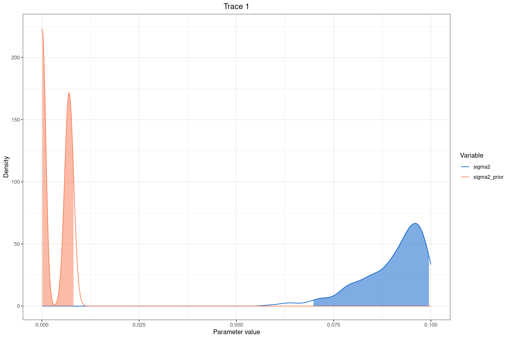

Introducción a la biogeografía filogenética con el modelo DEC
Introducción
En biología evolutiva, los caracteres de los organismos pueden representarse como rasgos discretos (como tipo de dieta, hábitat o sistema de apareamiento) o continuos (como tamaño corporal, longitud del ala o temperatura óptima). Analizar cómo estos caracteres han cambiado a lo largo del tiempo nos permite inferir los procesos que han moldeado la diversidad biológica actual.
La reconstrucción de estados ancestrales es una herramienta fundamental para estimar los valores o estados que tenían estos caracteres en los ancestros comunes de las especies actuales. Para ello, utilizamos modelos estadísticos que describen cómo evolucionan los rasgos sobre un árbol filogenético.
En este caso, utilizamos datos morfológicos provenientes del artículo Analyses of head and thorax in Eupomphini (Meloidae) suggest that complex behaviors are not associated to changes in general shape. La matriz de caracteres (med_geiger.nex) incluye cuatro medidas continuas obtenidas de especies de escarabajos del grupo Eupomphini: volumen de élitros, volumen del abdomen, amplitud y convexidad. Estas características se utilizarán para modelar su evolución a lo largo de un árbol filogenético calibrado en el tiempo, que corresponde a una versión modificada del árbol utilizado en la primera unidad sobre patrones de diversificación.
Modelos de evolución de caracteres continuos
Los modelos que exploraremos pertenecen a la familia de modelos gaussianos, es decir, aquellos que suponen que los cambios evolutivos siguen una distribución normal. En particular, nos enfocaremos en dos clases principales:
Modelos de Movimiento Browniano (BM): Suponen que el rasgo evoluciona como un paseo aleatorio, con una media de cambio igual a cero y una varianza proporcional al tiempo. Son útiles para estimar una tasa global de evolución y explorar cómo esta puede variar entre linajes o a lo largo del tiempo.
Modelos de Ornstein-Uhlenbeck (OU): Introducen un parámetro adicional que representa un valor óptimo hacia el cual tiende la evolución del carácter. Este tipo de modelo es más adecuado cuando se sospecha que la evolución del rasgo está sujeta a selección estabilizadora.
Modelo Browniano de tasa constante en RevBayes
En modelos de evolución de caracteres continuos como el Movimiento Browniano, se asume que el carácter cambia de forma aleatoria a lo largo del tiempo, sin una dirección preferida. En este contexto, el parámetro \(\sigma^2\) representa la tasa de evolución del rasgo: a mayor valor de \(\sigma^2\), mayor es la varianza esperada en el cambio del carácter entre especies, lo que implica una evolución más rápida.
Al comparar la distribución a priori y posterior de \(\sigma^2\) mediante análisis bayesianos, podemos evaluar cuánto han informado los datos al modelo. Una diferencia clara entre ambas distribuciones indica que los datos aportan evidencia sobre la velocidad de evolución del carácter evaluado.
🧠 ¿Qué es \(\sigma^2\) en este contexto?
En un modelo de Movimiento Browniano aplicado a evolución de caracteres:
\[ Var(cambio-del-carácter) = \sigma^2 * t \]
t: longitud de la rama (tiempo evolutivo).
σ²: parámetro de tasa de evolución.
El cambio esperado del carácter es 0, pero la varianza esperada del cambio crece con el tiempo y con \(\sigma^2\).
📌 ¿Qué implica eso para tu análisis?
Cuando tú analizas, por ejemplo, el volumen del élitro, estás suponiendo que ese carácter cambia aleatoriamente en el tiempo, pero a un ritmo que depende de \(\sigma^2\). Entonces:
Un \(\sigma^2\) alto → el rasgo cambia mucho a lo largo del árbol → evolución rápida del carácter.
Un \(\sigma^2\) bajo → el rasgo cambia poco → evolución lenta o conservada.
En análisis bayesianos, queremos estimar la probabilidad de un parámetro (como \(\sigma^2\), la tasa de evolución bajo el modelo Browniano) después de ver los datos. Para eso, necesitamos comparar dos cosas:
1️⃣ El script de posterior (mcmc_BM.Rev)
Utiliza tanto el modelo como los datos observados.
Fija los datos con X.clamp(data).
Nos dice: 👉 ¿Qué valores de\(\sigma^2\) son más probables ahora que hemos visto los datos?
################################################################################# Ejemplo de RevBayes: Inferencia bayesiana de tasas de evolución bajo un # modelo de Movimiento Browniano con tasa constante############################################################################################################### Lectura de los datos ################################ Seleccionar el carácter continuo a analizar (ej. volumen del élitros)trait <-1# Leer el árbol filogenético calibrado en el tiempoT <-readTrees("../data/subarbol_ingroup_morph.nex")[1]# Leer la matriz de caracteres continuosdata <-readContinuousCharacterData("../data/med_geiger.nex")data.excludeAll()data.includeCharacter(trait)# Crear vectores para movimientos (moves) y monitoresmoves =VectorMoves()monitors =VectorMonitors()################################### Especificar el modelo del árbol ###################################tree <- T####################################### Especificar el modelo de la tasa σ² ######################################## Definir una distribución a priori log-uniforme para la tasa de evoluciónsigma2 ~dnLoguniform(1e-5, 1e-1)# Movimiento de escala para proponer nuevos valores de sigma2moves.append( mvScale(sigma2, weight=1.0) )####################################### Especificar el modelo BM (Browniano) ######################################## Modelo con REML y sigma2 como tasa de cambio (desviación estándar)X ~dnPhyloBrownianREML(tree, branchRates=sqrt(sigma2))# Fijar los datos observados al nodo estocásticoX.clamp(data)###################### Crear el modelo completo ######################mymodel =model(sigma2)# Configurar monitores para guardar resultados y mostrar en pantallamonitors.append( mnModel(filename="../out/morpho/simple_BM.log", printgen=10) )monitors.append( mnScreen(printgen=100, sigma2) )########################### Ejecutar la simulación MCMC ############################ Crear objeto MCMCmymcmc =mcmc(mymodel, monitors, moves, nruns=2, combine="mixed")# Ejecución principalmymcmc.run(generations=3000)# Finalizarq()
2️⃣ El script de prior (mcmc_BM_prior.Rev)
Usa solo el modelo y su distribución a priori, sin considerar los datos.
Omite los datos con mymodel.ignoreAllData().
Nos dice: 👉 ¿Qué creíamos posible sobre\(\sigma^2\) antes de ver los datos?
################################################################################# Ejemplo de RevBayes: Muestreo de la distribución a priori del modelo # de Movimiento Browniano con tasa constante############################################################################################################### Lectura de los datos ################################ Leer el árbol filogenético calibradoT <-readTrees("../data/subarbol_ingroup_morph.nex")[1]# Crear vectores para movimientos y monitoresmoves =VectorMoves()monitors =VectorMonitors()################################### Modelo del árbol ###################################tree <- T####################################### Modelo de tasa con distribución a priori #######################################sigma2 ~dnLoguniform(1e-5, 1e-1)moves.append( mvScale(sigma2, weight=1) )####################################### Modelo BM sin usar datos observados #######################################X ~dnPhyloBrownianREML(tree, branchRates=sqrt(sigma2))###################### Crear el modelo y omitir datos ######################mymodel =model(sigma2)mymodel.ignoreAllData()# Monitores para archivo y pantallamonitors.append( mnModel(filename="../out/morpho/simple_BM_prior.log", printgen=10) )monitors.append( mnScreen(printgen=100, sigma2) )########################### Ejecutar simulación MCMC ###########################mymcmc =mcmc(mymodel, monitors, moves, nruns=2, combine="mixed")# Solo ejecución, sin burn-in necesario para priormymcmc.run(generations=3000)# Finalizarq()
📈 Interpretación de la gráfica de \(\sigma^2\)
library(RevGadgets)library(ggplot2)# Leer archivossimple_BM_posterior <-readTrace("../docs/u1_PatDiv/output/morpho/simple_BM.log")[[1]]simple_BM_prior <-readTrace("../docs/u1_PatDiv/output/morpho/simple_BM_prior.log")[[1]]# Añadir la prior a la tabla posteriorsimple_BM_posterior$sigma2_prior <- simple_BM_prior$sigma2# Graficarplot <-plotTrace(list(simple_BM_posterior), vars=c("sigma2", "sigma2_prior"))plot
[[1]]

Eje X: valores del parámetro \(\sigma^2\) (tasa evolutiva).
Eje Y: densidad de probabilidad.
Línea roja (sigma2_prior): lo que asumías posible antes de ver los datos.
Línea azul (sigma2): lo que los datos te dicen que es más probable.
✅ Interpretación esperada: Si la curva azul (posterior) está desplazada respecto a la roja, significa que tus datos aportaron información nueva.
Si la curva azul es más estrecha, implica que la incertidumbre sobre \(\sigma^2\) se redujo gracias a los datos.
Si las dos curvas son similares, puede que tus datos no sean muy informativos para este modelo.